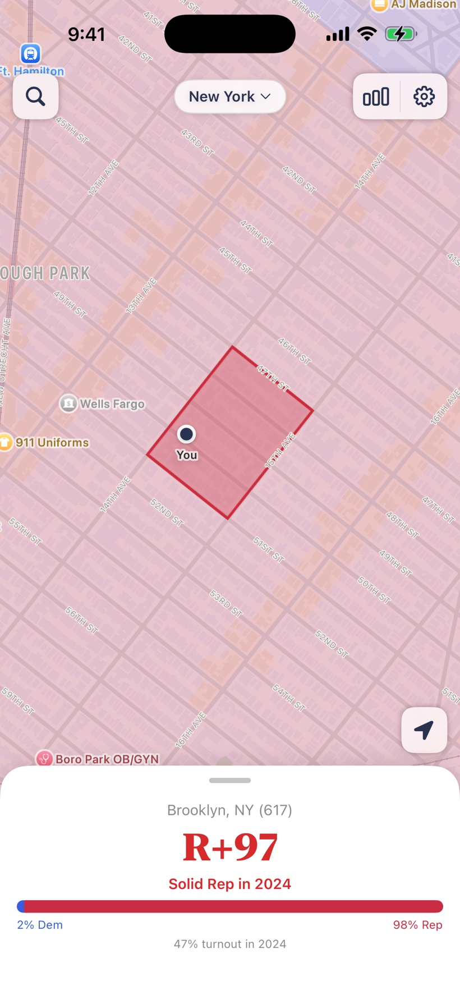
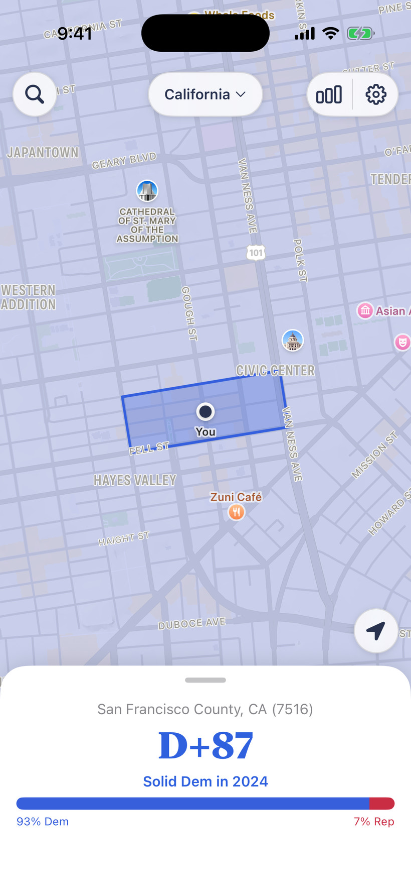
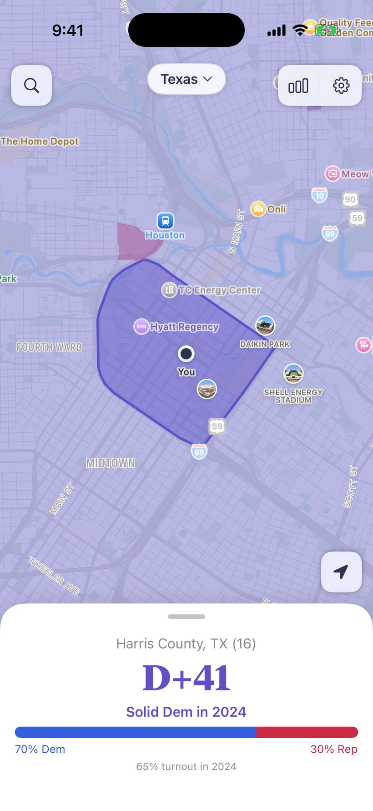
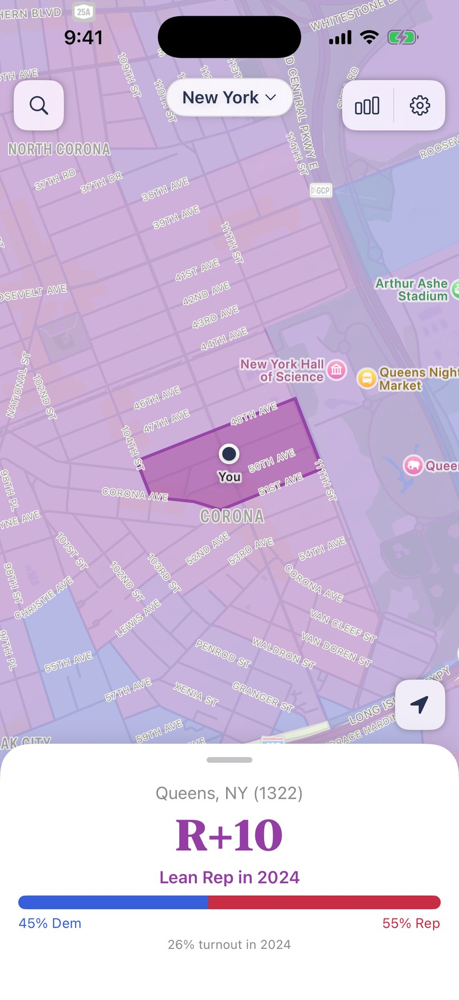
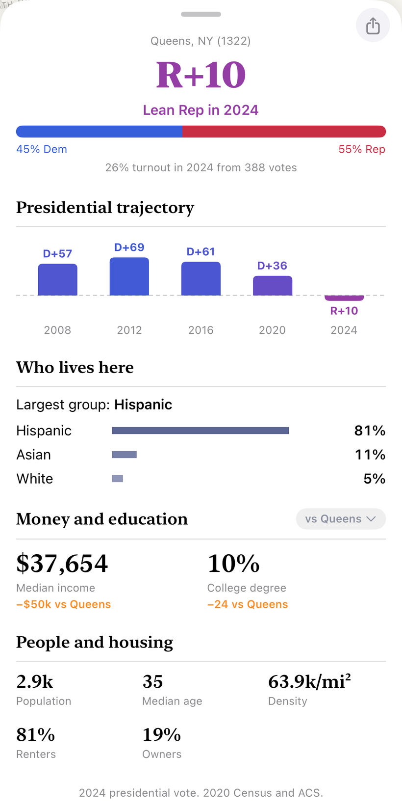
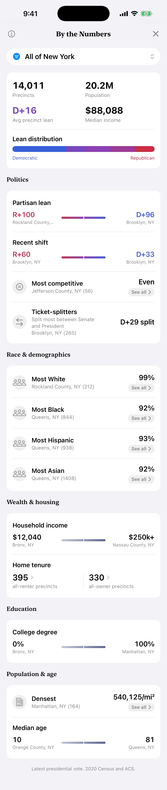

Precinct is an election map for every neighborhood.
A precinct is the smallest unit at which votes are reported. Some hold no one at all, others more than 10,000 people, packed into a single city block or spread across miles of countryside. Precinct shows how each one voted and who lives there.



D+ leans Democratic, R+ Republican.
Everything on a precinct, in one card.
A precinct in Corona, Queens. R+10 today, D+61 in 2016.


- 1
The lean
How far it leaned, Democratic or Republican, in the last presidential race.
- 2
Which way it’s moving
The margin across recent elections. This precinct was D+61 in 2016 and R+10 by 2024, a 71-point swing in eight years.
- 3
Who lives here
Race, age, and households, from the Census and the American Community Survey.
- 4
Money & education
Median income and college degrees, set against the state.
Your precinct, on the home screen.
It reads where you are. When your location changes, the widget redraws for the new precinct, with an hourly refresh as a backstop.
The whole map, by the numbers.
Pull back from one precinct to a county or a state: the average lean, the spread from most Democratic to most Republican, and the precincts that swung hardest.

Every precinct in four states. About 49,000 of them.
| State | Precincts | Counties |
|---|---|---|
| California | 23,910 | 58 |
| New York | 14,011 | 62 |
| Texas | 8,872 | 254 |
| Massachusetts | 2,152 | 14 |
All of it is public data: precinct boundaries from the Census Bureau and state election offices, joined to presidential returns and the 2020 Census and American Community Survey.